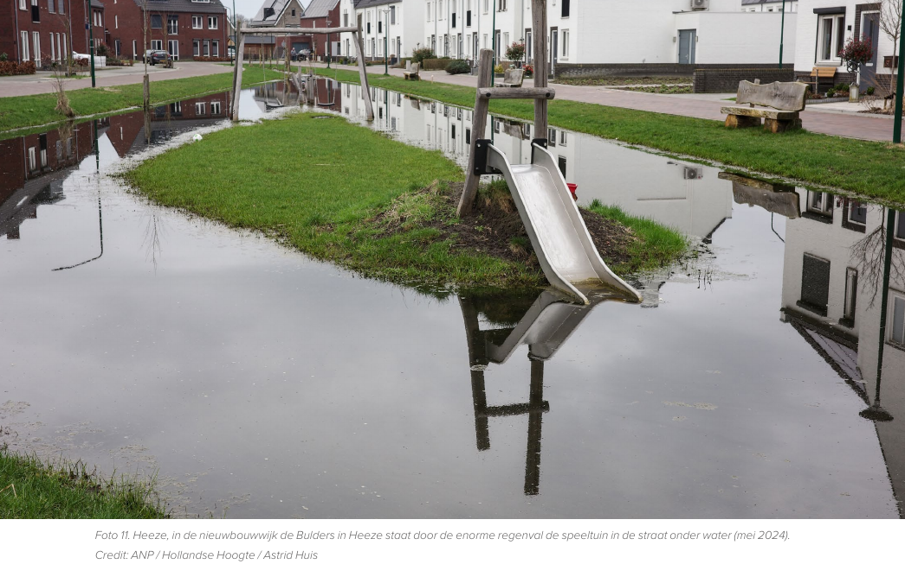

https://cobra-groeninzicht.nl/producten/330300-regel/
het overzicht
https://cobra-groeninzicht.nl/producten/330300-regel/

https://cobra-groeninzicht.nl/producten/330300-regel/nederland/
Klimaat Data: NEN-5060

Naast het maximaal remmen van klimaatverandering, zullen we moeten accepteren dat klimaatverandering onomkeerbaar lijkt. Dus zullen daarnaast maatregelen moeten nemen om om te gaan met die veranderingen.
Gebieden
- Biodiversiteit
- Welzijn van mensen / vergroening
- Hittestress
- Droogte
- Wateroverlast
- Insecten
-
Niveaus
- Persoonlijk / woning
- Buurt
- Bedrijventerrein
- Gemeente
- Provinciale / Landelijke overheid
Termijnen
- binnen 5 jaar
- langere periode
3 - 30 - 300 regel
Aandacht voor klimaatadaptatie en biodiversiteit is voor onze leefbaarheid net zo essentieel als CO2-reductie.